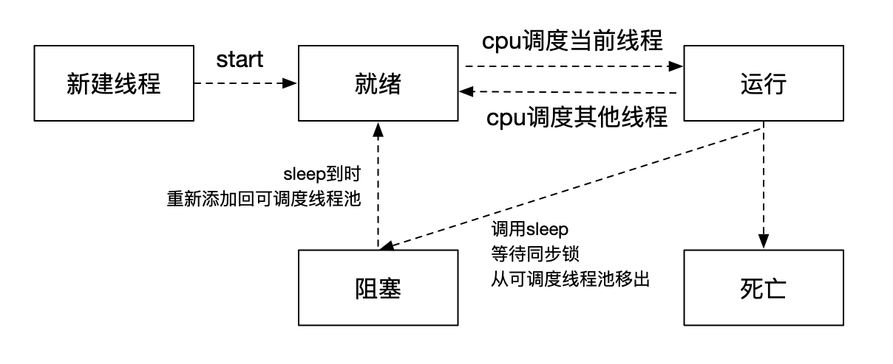

定义
1. 什么是线程
线程是在应用程序内部实现多个执行路径的相对轻量的方法。在系统级别，程序并排运行，系统根据每个程序的需求和其他程序的需求为每个程序分配执行时间。但是，每个程序中都存在一个或多个执行线程，这些线程可用于同时或以几乎同时的方式执行不同的任务。系统本身实际上管理着这些执行线程，调度它们在可用内核上运行，并根据需要抢先中断它们以允许其他线程运行。
- 多个线程可以提高应用程序的感知响应能力。
- 多线程可以提高应用程序在多核系统上的实时性能。
2. 什么是进程
进程是指在系统中正在运行的一个应用程序。每个进程之间是独立的，每个进程均运行在其专用的且受保护的内存空间内。
3. 两者的关系
- 线程是进程的基本执行单元，一个进程的所有任务都在线程中执行。
- 进程要想执行任务，必须得有线程，进程至少要有一条线程。
- 程序启动会默认开启一条线程，这条线程被称为主线程或 UI 线程。
- 同一进程的线程共享本进程的地址空间，而进程之间则时独立的。
- 同一进程内的线程共享进程的资源，如：内存、I/O、CPU等，而进程之间是独立的。
- 一个进程崩溃后，保护模式下，不会对其他进程产生影响。一个线程崩溃则整个进程死掉。进程比线程健壮。
- 进程切换时，消耗的资源大，效率低。设计频繁切换时，是哦那个线程好于进程。
- 线程不能独立执行，必须依存于进程（应用程序）。
- 线程时处理器调度的基本单位，进程不是。
- 线程没有地址空间，线程保护在进程地址空间中。
4. 多线程的优点
- 能适当提高程序的执行效率
- 能适当提高资源的利用率(CPU，内存)
- 线程上的任务执行完成后，线程会自动销毁
5. 多线程的缺点
- 开启线程需要占用一定的内存空间(默认情况下，每一个线程都占512KB)
- 如果开启大量的线程，会占用大量的内存空间，降低程序的性能
- 线程越多，CPU 在调用线程上的开销就越大
- 程序设计更加复杂，比如线程间的通信、多线程的数据共享
- 多线程操作增加代码复杂度
6. 时间片
CPU在多个任务之间进行快速的切换，这个时间间隔就是时间片。
- 单核CPU同一时间，CPU只能处理1个线程（只能有一个线程执行）
- 多线程同时执行，是CPU快速在多个线程直接的切换，因为CPU调度线程的时间足够快，就造成了多线程的”同时“执行的效果。
- 如果线程数非常多，CPU会在N个线程之间切换，消耗大量的CPU资源，线程的执行效率会降低。
7. 线程的声明周期

8. 线程池的调度
4种饱和策略
- AbortPolicy 直接抛出RejectedExecutionExeception异常来阻止系统正常运行
- CallerRunsPolicy 将任务回退到调用者
- DisOldestPolicy 丢掉等待最久的任务
- DisCardPolicy 直接丢弃任务
那么这里有一个问题，是不是创建的线程优先级越高，执行的就越快呢？
答案是不一定，需要根据线程要使用的资源，已经线程池的饱和程度来判断。
- 如果这个线程需要很大的资源，比如处理几个G和处理几KB效率肯定是不一样的。
- 如果线程池处于饱和状态，并且都在执行状态，是没有办法把正在执行的线程取消掉的。
这就需要锁来解决，
多线程解决方案：
常见的多线程有pthread、NSThread、GCD、NSOperation：
锁
两个人买票，同一时间相同的操作，A买的时候有100张，B买的时候也有100张，那AB都买完的时候应该只剩下998张才对，但是如果不处理的情况下，会出现资源抢占的问题。
这就需要锁来解决。
1. atomic与nonatomic
atomic：原子属性(线程安全)，针对多线程设计的，使用属性时默认是atomic，保证同一时间只有一个线程能够写入(但是同一个时间多个线程都可以取值)。atomic本身就有一把锁(自旋锁) 单写多读:单个线程写入，多个线程可以读取。
nonatomic：非原子属性，非线程安全，适合内存小的移动设备。
iOS开发建议：
所有属性都声明为 nonatomic
尽量避免多线程抢夺同一块资源，尽量将加锁、资源抢夺的业务逻辑交给服务器端处理，减小移动客户端的压力
自旋锁 与 互斥锁的区别
两个都是进行同步操作而产生的。
自旋锁：发现其他线程在执行，当前线程会一直询问（忙等），直到当前线程开始执行。消耗性能比较高。适用于任务复杂度较低的。
互斥锁：发现其他线程在执行，当前线程即刻进入休眠（就绪状态），已知等待被唤醒执行。对于任务复杂度较高，资源较大使用互斥锁。
之后会有详细的描述，这里只是引出相关内容。
NSPort通信
1 | //1. 创建主线程的port |
创建了NSPort之后，一定要加入到NSRunLoop中包活，否则没有效果。
- runloop与线程是一一对应的，一个runloop对应一个核心的线程，为什么说是核心 的，是因为runloop是可以嵌套的，但是核心的只能有一个，他们的关系保存在一个全局 的字典里。
- runloop是来管理线程的，当线程的runloop被开启后，线程会在执行完任务后进入休 眠状态，有了任务就会被唤醒去执行任务。
- runloop在第一次获取时被创建，在线程结束时被销毁。
- 对于主线程来说，runloop在程序一启动就默认创建好了。
- 对于子线程来说，runloop是懒加载的，只有当我们使用的时候才会创建，所以在子线 程用定时器要注意:确保子线程的runloop被创建，不然定时器不会回调。